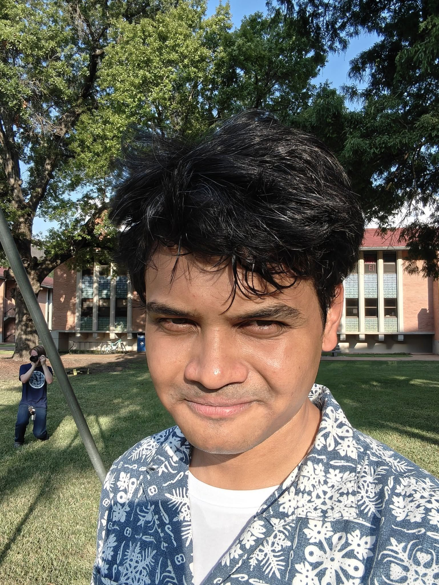

I'm interested in condensed matter theory and geometry hidden in such quantum systems.
My research projects are:
Beyond research, I am passionate about creative physics problems and participated in Asian & International Physics Olympiad in 2023. I grew up in Chittagong.
My work is/has been advised by:

Will Rice College,
6330 Main St,
Rice University
Houston, TX 77005